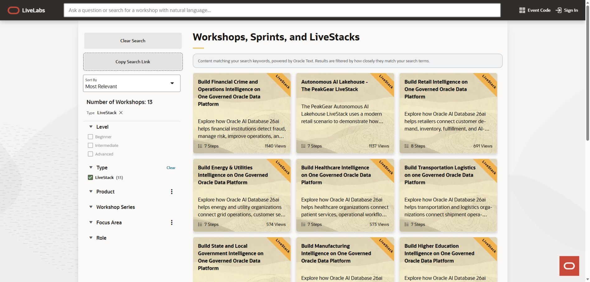
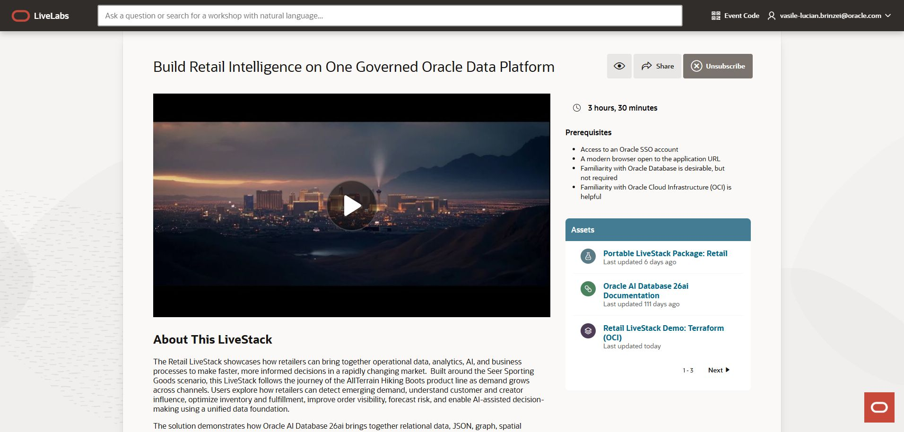
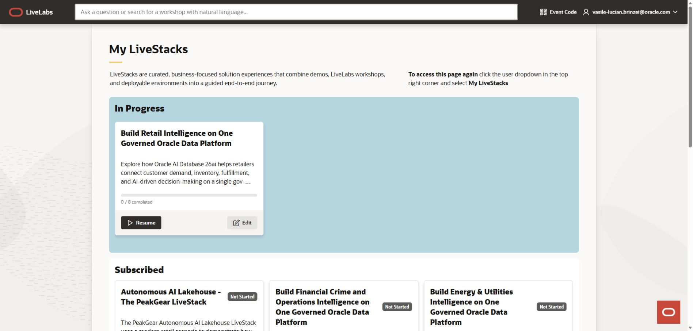
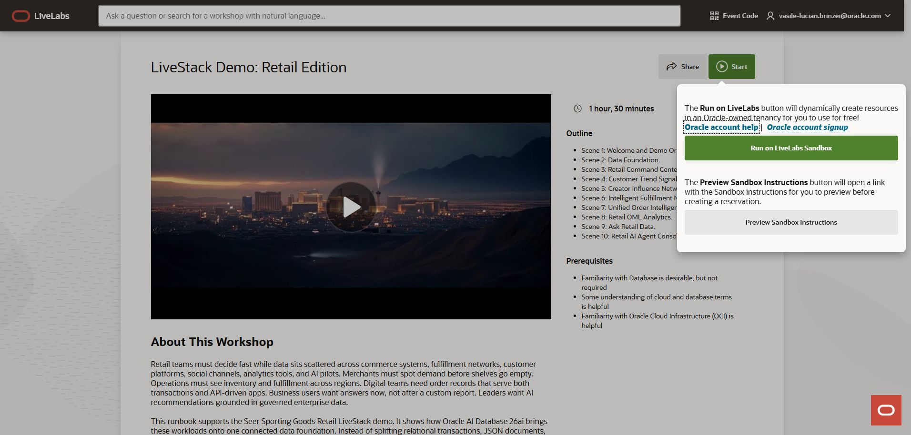
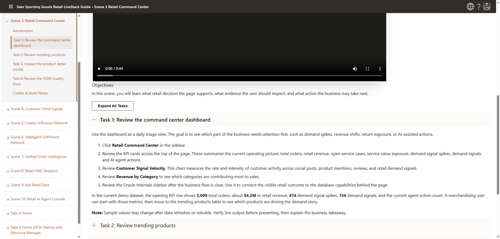
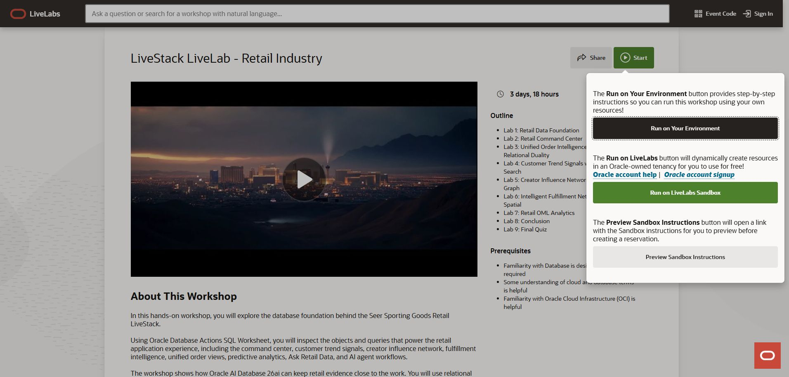
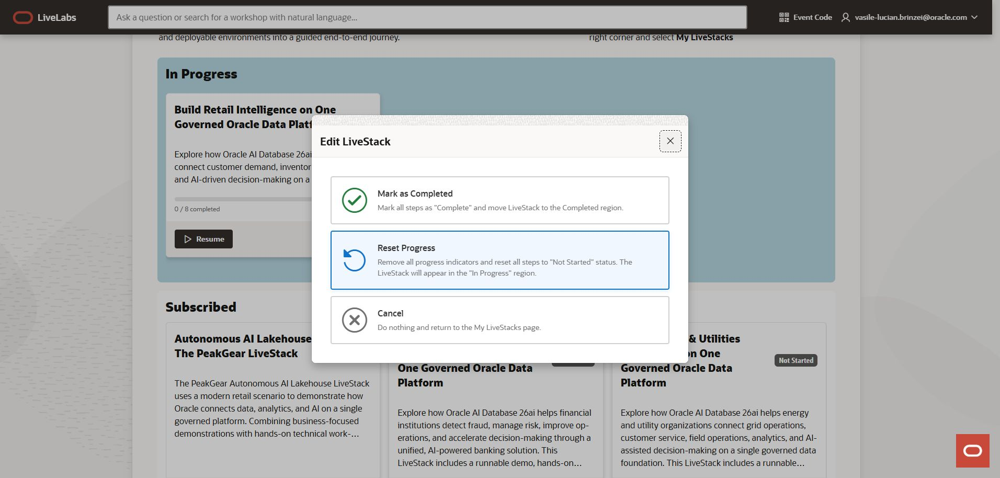

LiveLabs platform guide
LiveStacks on LiveLabs
Find a solution, follow its demo, and explore the technology hands-on. This walkthrough uses the Retail LiveStack to show the journey from first visit to returning learner.
Search the introduction, LiveLabs guide, and WMS guides.
Step 1
Find a LiveStack for your goal
- Open the LiveLabs catalog.
- Under Type, select LiveStack. Search for an industry or business problem.
- Open a card to see its bundle. Copy Search Link shares the filtered catalog instead of one bundle.


Explore an existing LiveStack
Retail Intelligence
Connect demand, inventory, fulfillment, and AI-assisted decisions.
Our worked example →PeakGear AI Lakehouse
Explore data integration, analytics, and AI through a retail scenario.
Explore PeakGear →Financial Intelligence
Explore financial crime, risk, and operations on a unified data foundation.
Explore financial services →Healthcare Intelligence
Connect patient services, operational workflows, analytics, and AI.
Explore healthcare →More industries in the catalog
Energy and utilities, higher education, high tech, life sciences, manufacturing, media and entertainment, state and local government, telecommunications, and transportation logistics.
Examples checked September 25, 2026. Use the catalog for the current selection; bundles and their contents can change.
Step 2
Know what is inside the bundle
A LiveStack connects several experiences around one business problem. The bundle page is your starting point; its demo, workshops, and downloads serve different purposes.


- Overview and supporting video
- Learn the scenario and intended outcome. A video introduces the experience; it does not launch the runnable demo.
- Prerequisites
- Check accounts, knowledge, and environment needs before starting. Each entry can have additional requirements.
- LiveStack Demo
- Explore the working application through guided business scenes: what happens, why it matters, and which technology supports it.
- LiveLabs Workshop
- Work through technical labs. A bundle may include a companion workshop and focused workshops on individual capabilities.
- Assets
- Download or open supporting material: a portable package, deployment template, product documentation, or presentation where provided.
- Internal Assets
- Oracle-employee-only resources are separate from public assets. Customers do not see the same internal material.
Retail example: Seer Sporting Goods follows demand for AllTerrain Hiking Boots. Start with the demo, inspect the database in the companion workshop, then explore focused entries for RAG, vectors, graph, JSON, or spatial features.
Step 3
Subscribe and keep the bundle handy
- Sign in to LiveLabs with your Oracle account and open the bundle.
- Select Subscribe. If the button already says Unsubscribe, you are already subscribed.
- Open the account menu in the upper-right corner and select My LiveStacks.
- Find the bundle under Subscribed and select View to return to it.


Subscription is not a reservation. It keeps the bundle in your subscribed list; it does not provision the demo, enroll you in an event, or complete a workshop. Use Unsubscribe only when you want to stop following the bundle.
Open My LiveStacks on LiveLabs. This learner dashboard is separate from the authoring area with the same name in WMS.
Step 4
Follow the business demo
- In the Retail bundle, open LiveStack Demo. Review its outline and prerequisites.
- Select Start. Choose Preview Sandbox Instructions to read the guide without creating an environment.
- When ready to run, return to the entry and choose Run on LiveLabs Sandbox. Follow the reservation workflow and wait for the environment to be ready.
- Use the guide’s Get Started instructions and your reservation’s login information to open the application. Keep the guide available beside it.
- Follow the scenes in order. Perform each task in the application, inspect the result, and connect it to the business decision.


Try a scene: Retail Command Center
After orientation and the data foundation, open Retail Command Center. Review the business indicators, inspect customer signal velocity and trending products, then trace AllTerrain Hiking Boots into product details and its JSON representation.


Look for the outcome: can you explain which demand signal needs attention and how the shared data supports that decision? Continue through creator influence, fulfillment, orders, analytics, Ask Retail Data, and the AI Agent Console. Sample values can change.
Read the Retail Command Center scene. A guide preview alone does not supply an application URL or credentials.
Step 5
Go hands-on with the workshop
Return to the bundle and open LiveLabs Workshop. The Retail companion workshop uses Database Actions SQL Worksheet to explore the objects and queries behind the application.
- Review the workshop outline and prerequisites, then select Start.
- Preview the instructions and choose a supported run option. Run on LiveLabs Sandbox uses an Oracle-hosted environment; Run on Your Environment uses your own resources.
- Complete the environment setup in that guide. Do not assume that a demo reservation supplies every workshop’s database, credentials, or data.
- Work through the labs, run the supplied queries, and compare results with the expected output. Finish the conclusion and quiz where provided.
- Follow the guide’s cleanup instructions, especially for resources in your own environment. Return to the bundle for the next entry.


Open the Retail companion workshop. Your own environment may incur costs; check its requirements before deploying anything.
Step 6
Use the right supporting asset
Return to Assets on the bundle page. Use Next when the panel has more than one page. Choose the material that matches your next step:
- Portable LiveStack Package
- Take the solution to a supported environment. Read the package’s README for its contents, dependencies, configuration, and run instructions.
- Terraform (OCI) package
- Follow the solution’s OCI deployment guide. Check tenancy permissions, region, quotas, resource choices, costs, and cleanup.
- Product documentation
- Learn the underlying feature and verify its requirements. Documentation is a reference, not a preconfigured environment.
- Other supporting material
- Use decks or additional resources when the bundle supplies them. Do not assume every LiveStack includes the same files or deployment options.
For Retail, continue with Take It Home or Take It Home (OCI): Deploy with Resource Manager. Get the current download from the bundle rather than reusing an old file link.
A portable demo is a starting point for validation, not evidence that your deployment is production-ready. An empty Assets panel does not contain a hidden deployment package.
Step 7
Return, resume, and review progress
- Open the account menu → My LiveStacks.
- Under In Progress, review the completed-entry count and select Resume to return to the bundle.
- Use the entry status to choose what to work on next. Open My Reservations from the account menu when you need an existing Sandbox and its access details.
- Use Edit only when you intend to change the bundle’s progress record.


- Mark as Completed
- Marks all steps complete and moves the LiveStack to Completed. Use it after finishing the work, not merely opening the guide.
- Reset Progress
- Resets all steps to Not Started and keeps the LiveStack in In Progress. This is not an instruction to reset or rebuild a Sandbox.
Cannot find your bundle or environment?
- Check that you are signed in to the same Oracle account used to subscribe or reserve.
- Look in Subscribed, In Progress, and Completed; they describe different states.
- Check My Reservations for the environment’s availability. A subscription does not keep a Sandbox running indefinitely.
- For access or lab problems, use the entry guide’s Need Help? instructions.
Screens and controls reviewed September 25, 2026. Sources: LiveLabs catalogRetail LiveStackRetail demo guide